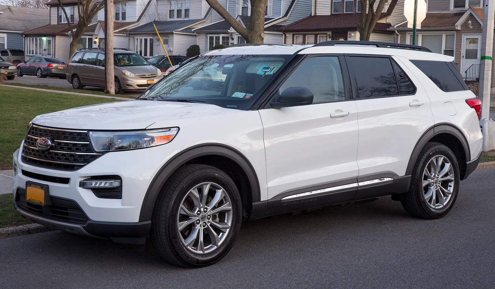
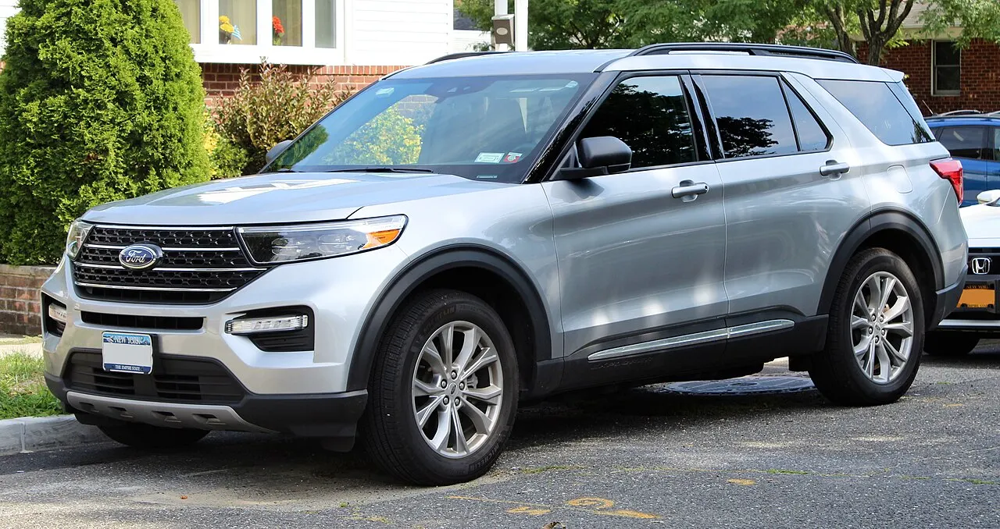
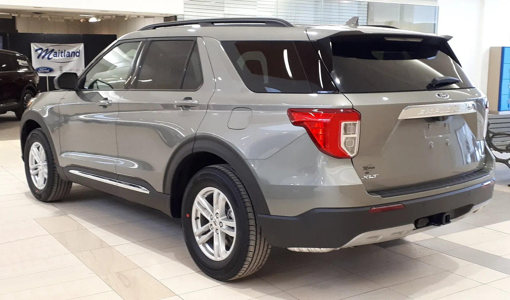
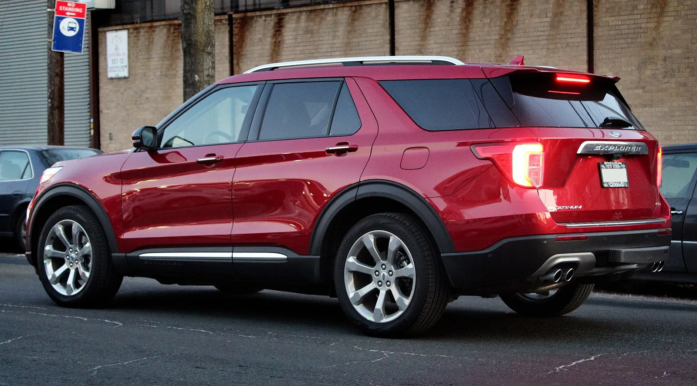
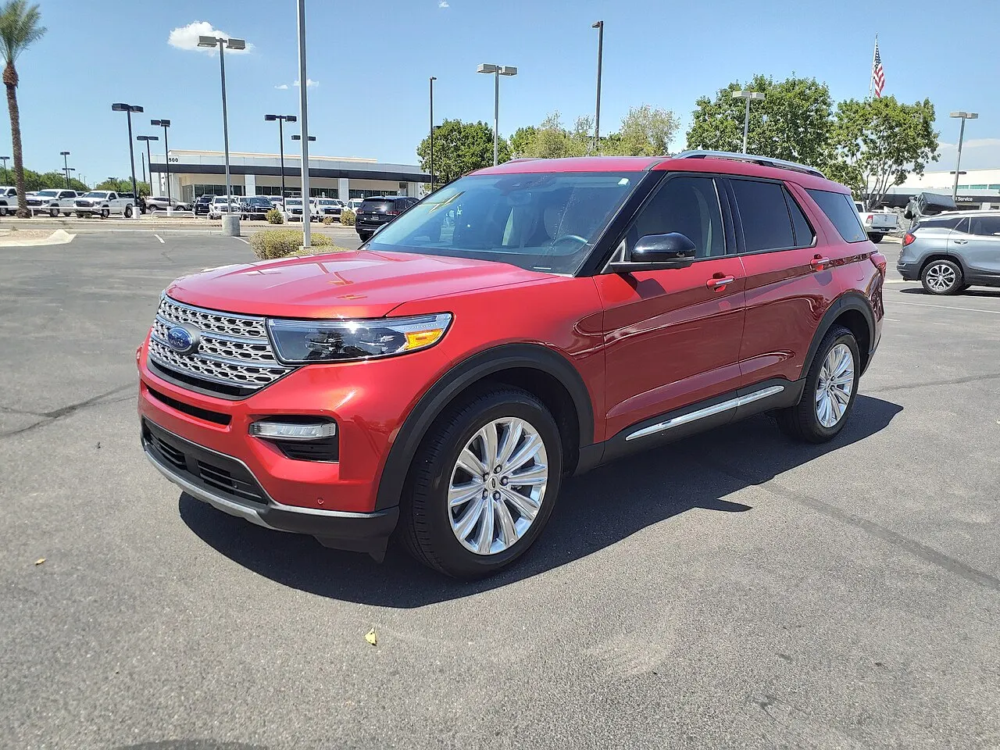
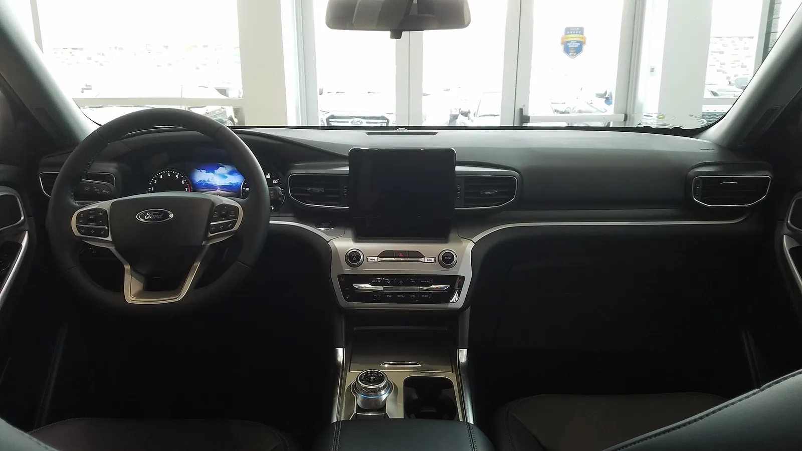
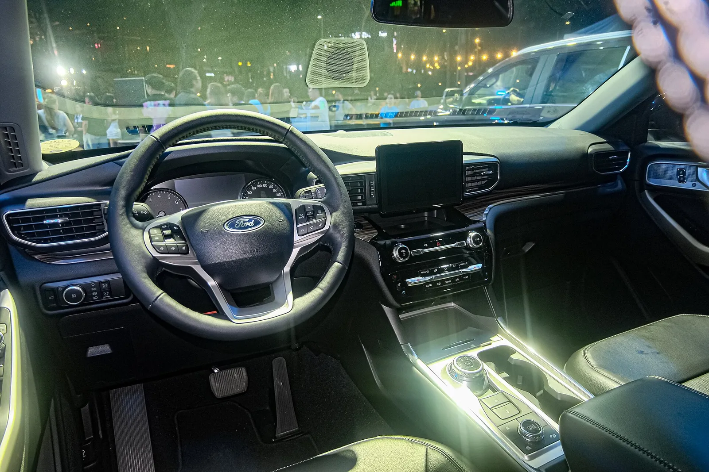
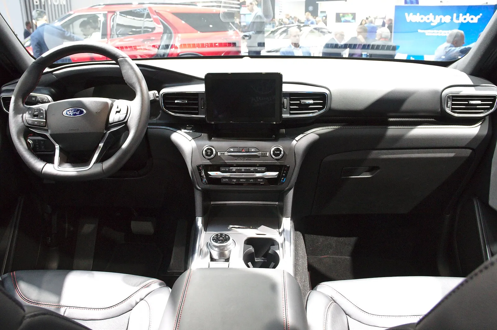
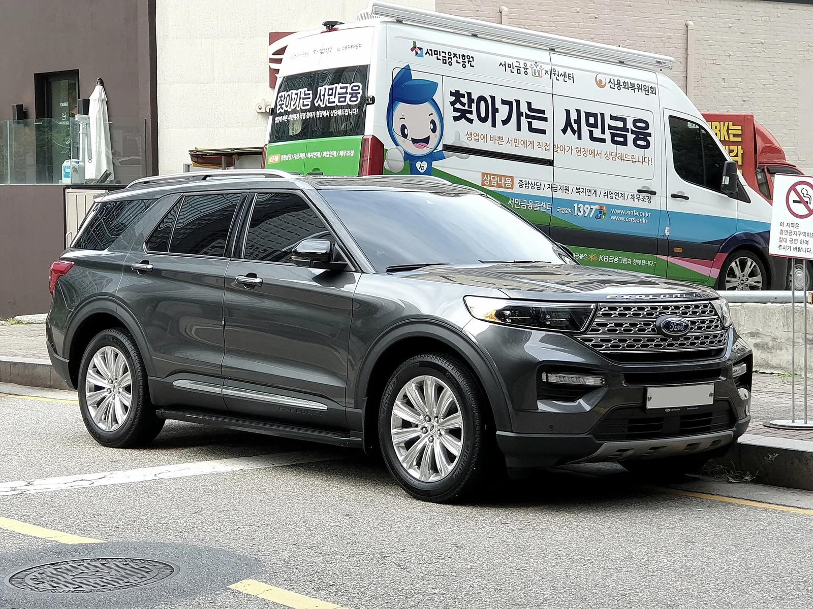

▲ 6세대(U625) 익스플로러. 미국 판매 2020년형 XLT 사진으로 한국 출시 사양과 세부가 다를 수 있다 ⓒ Mr.choppers(Wikimedia Commons, CC BY-SA 3.0)
"팰리세이드 살 돈이면 이 차?" 6천만 원대에 팔리던 3열 수입 SUV가 3년 만에 2천만 원대 후반까지 내려왔다. 위드뉴스 자동차(8월 23일 보도)는 엔카에 등록된 2021~2023년식 포드 익스플로러 2.3 가솔린 4WD 110대를 8월 20일 기준으로 집계해 중간 50% 호가가 2,779만~3,380만 원, 중앙값이 약 2,999만 원이라고 전했다. 카프리즘은 이 숫자를 출시가와 직접 맞대 감가율을 계산하고, 유지비와 국산 3열 SUV 신차까지 같은 조건으로 비교해 "이 값이면 사도 되는 차인가"를 따져봤다.
1. 이 숫자는 어디서 나왔나 — 엔카 호가, 위드뉴스 집계
이번 시세의 출처는 위드뉴스 자동차가 8월 23일 게재한 기사다. 기사는 2026년 8월 20일 엔카에 올라온 2021~2023년식 포드 익스플로러 2.3 가솔린 4WD 110대를 모아 중간 50%의 호가 구간과 중앙값을 제시했다. 카프리즘은 엔카 원문 페이지를 직접 열어 110대의 개별 매물 목록을 확인하지는 못했다. 따라서 아래 수치는 "엔카 매물을 위드뉴스가 집계한 값"으로 다룬다. 같은 기사가 "판매 완료된 실거래가가 아닌 광고 매물가"라고 못 박은 점도 그대로 전제로 둔다.
| 항목 | 내용 | 카프리즘 메모 |
|---|---|---|
| 조사 대상 | 2021~2023년식 2.3 가솔린 4WD 110대 | 트림별·연식별 세부 분포는 기사에 없음 |
| 중간 50% 호가 | 2,779만~3,380만 원 | 하위·상위 25%를 뺀 구간. 최저가·최고가가 아님 |
| 중앙값 | 약 2,999만 원 | 평균이 아닌 중앙값 |
| 주행거리 | 기사는 3만~7만km 안팎을 "실속 구간"으로 제시 | 110대 전체의 주행거리 분포(1만~8만km 등)는 확인하지 못함 |
| 성격 | 광고 매물 호가 | 실거래가는 협상·옵션·사고 이력에 따라 더 낮을 수 있음 |
📍 호가 기준과 실거래가는 다르다
중고차 호가에는 딜러 마진과 성능점검·보증 비용이 얹혀 있다. 반대로 협상 폭은 매물마다 다르다. 이번 집계는 어느 쪽도 걷어내지 않은 숫자라, 이 글의 감가율은 "호가 기준 잔존율"이라고 읽는 것이 정확하다.
2. 출시가와 맞대면 — 감가액·잔존율 계산
6세대 익스플로러는 2019년 11월 한국에 출시됐다. 카이즈유 가격표 기준 2021년형 2.3 리미티드는 6,020만 원, 3.0 플래티넘은 6,760만 원이었고, 출시 당시 2.3 리미티드는 5,990만 원부터 시작했다. 엔카 집계 대상이 2.3 가솔린 4WD이므로 비교 기준은 2.3 리미티드다. 2022·2023년식의 연식별 출시가는 1차 자료로 확인하지 못해, 하나의 기준으로 2021년형 6,020만 원을 썼다. 연식이 오를수록 출시가가 올랐다면 실제 감가액은 아래 숫자보다 클 수 있다.
| 구분 | 호가 | 감가액 | 잔존율 |
|---|---|---|---|
| 중간 50% 하단 | 2,779만 원 | 3,241만 원 | 46.2% |
| 중앙값 | 2,999만 원 | 3,021만 원 | 49.8% |
| 중간 50% 상단 | 3,380만 원 | 2,640만 원 | 56.1% |
| (참고) 5,990만 원 기준 중앙값 | 2,999만 원 | 2,991만 원 | 50.1% |
즉 중앙값 기준으로 출시가의 절반 아래까지 내려왔다. 같은 3열 수입 SUV라도 윗급인 링컨 에비에이터의 감가 구조가 궁금하다면 에비에이터 중고 가격 분석과 비교해 볼 만하다. 출시 3~5년 차 수입 대형 SUV의 감가로는 특별히 극단적이지는 않다. 카프리즘이 다룬 링컨 내비게이터(5년 만에 약 60% 감가) 기사와 견주면 오히려 평범한 수준이다. 눈에 띄는 것은 감가 자체보다 "팰리세이드 신차 가격 아래"라는 위치다.

▲ 미국 판매 2020년형 XLT(뉴욕 퀸스 촬영). 중고 매물로 흔한 6세대 초기 연식의 외관을 보여 주는 참고 사진이며 한국 사양과 다를 수 있다. ⓒ Kevauto(Wikimedia Commons, CC BY-SA 4.0)
| 비교 대상 | 가격 | 중앙값 2,999만 원 대비 |
|---|---|---|
| 익스플로러 2026년형 ST-라인(부분변경형) | 7,750만 원(소비자가 보도 기준) | 중고 중앙값은 신형의 약 38.7% |
| 팰리세이드 가솔린 2.5 터보 7인승 익스클루시브 | 약 4,516만 원(검색 요약 인용, 현대차 가격표 직접 확인은 못 함) | 신차가 약 1,517만 원 비쌈 |
| 싼타페 가솔린 2.5 터보 익스클루시브 | 3,606만 원(2026년형, 2025년 8월 7일 발표) | 신차가 약 607만 원 비쌈 |
| 쏘렌토 2.5 가솔린 터보 프레스티지 | 3,580만 원(2026년형) | 신차가 약 581만 원 비쌈 |

▲ 6세대 익스플로러 후면. 미국 판매 XLT 전시차로 한국 사양과 다를 수 있다. ⓒ SsmIntrigue(Wikimedia Commons, CC BY-SA 4.0)
3. 연식·트림·주행거리 — 어떤 매물이 이 가격대인가
6세대 익스플로러는 2021~2023년 모델이 같은 플랫폼(CD6, 후륜 기반)을 쓴다. 전장 5,050mm, 휠베이스 3,025mm, 2.3L 에코부스트 304마력·최대토크 약 42.9kg.m에 10단 자동변속기가 조합된다(카이즈유·나무위키 정리). 부분변경(2024년 11월 출시)이 들어오기 전 모델이라 외관과 실내 구성이 비슷하다. 연식 차이는 주로 옵션 구성, 주행거리, 잔여 보증에서 갈린다.
| 구분 | 위드뉴스 기사 요지 | 카프리즘 코멘트 |
|---|---|---|
| 2021~2022년식, 3만~7만km | 정비 이력이 투명하면 "실속형 스위트스폿" | 신차 보증 종료 시점과 겹쳐 소모품 교체 비용이 걸림 |
| 10만km 넘긴 최저가 | 초기 가성비 기준과 거리 | 가격표의 아랫부분은 대개 이 구간일 가능성(추정) |
| 2023년식 잔여 보증 매물 | 3천만 원대 중후반 형성 | 보증 승계 조건은 매물별 확인 필요(확인 못 함) |
| 권장 점검 | 타이어·브레이크·배터리 교체 주기 | 취득세·보험료·첫해 정비비까지 포함해 총비용 판단 |
트림 정보는 제한적이다. 엔카 집계가 2.3 가솔린 4WD로 한정돼 있어 3.0 V6 플래티넘(출시가 6,760만 원), 3.0 PHEV(7,410만 원)는 이번 시세와 직접 비교할 수 없다. 카이즈유는 2021년형 구성을 2.3 리미티드, 3.0 플래티넘, 3.0 PHEV로 정리했다(가격표 6,020만·6,760만·7,410만 원, 출시 기사 5,990만 원을 이번에 직접 확인). 8만km 이상 매물과 인승(6인승 캡틴시트 vs 7인승 벤치) 비율은 어떤 자료에서도 확인하지 못했다.
▲ 2024년형 익스플로러 2.3 리미티드 4WD(필리핀 포드 알라방 전시장 촬영). 한국 사양과 세부가 다를 수 있다. ⓒ Ethan Llamas(Wikimedia Commons, CC BY-SA 4.0)

▲ 6세대 익스플로러 측후면. 파일명에는 플래티넘으로 표기돼 있으나 한국 사양과의 동일성은 확정하지 않았다. ⓒ Kevauto(Wikimedia Commons, CC BY-SA 4.0)
4. 유지비 — 세금·연비·보험·정비·리콜
자동차세는 배기량 기준이다. 포드 2.3 에코부스트의 배기량은 약 2,261cc로 알려져 있으나 이번에 1차 자료에서 재확인하지는 못했다. 비영업용 승용차 1,600cc 초과 구간 cc당 200원, 지방교육세 30% 가산이라는 지방세법 요율로 계산하면 연 약 58.8만 원이다(2,261cc×200원×1.3). 연납 공제율은 2026년 기준 1월 약 4.58%, 3월 약 3.76%, 6월 약 2.51%, 9월 약 1.25%로 알려져 있어(지자체·보도 기준, 위택스 공지로 직접 재확인하지는 못함), 1월에 연납하면 약 56.1만 원이다. 2,497cc인 팰리세이드·싼타페 2.5 터보는 연 약 64.9만 원, 1월 연납 시 약 62.0만 원이다. 오히려 익스플로러가 연 약 6만 원 싸다. 예전에는 1월 10% 등 단계식으로 알려졌으나, 현행 공제율은 위 수치를 기준으로 봐야 한다.
| 항목 | 익스플로러 2.3T | 팰리세이드 2.5T | 하이브리드(참고) |
|---|---|---|---|
| 공인 복합연비 | 약 8.9km/L(카이즈유 8.3~9.3km/L는 엔진별 범위). 연료비 계산은 보수적으로 8.7km/L 적용 | 가솔린 약 9km/L 가정 | 최대 약 14.1km/L(다나와 범위 상단) |
| 연간 연료비 | 약 293만 원(8.7km/L) ~ 340만 원(7.5km/L 가정) | 약 283만 원 | 약 182만 원(14km/L) |
| 자동차세(연납 전) | 약 58.8만 원 | 약 64.9만 원 | 1.6L급이면 약 29만 원 |
| 자동차세(1월 연납, 4.58% 공제) | 약 56.1만 원 | 약 62.0만 원 | — |
| 연료 등급 | 제조사 지정 확인 못 함 | 확인 못 함 | — |
보험료와 정비비는 표준 요율표가 없어 확인하지 못했다. 다만 수입차는 부품 가격과 공임이 국산보다 높은 편이라는 일반적 경향이 있으며, 아래 총비용 비교에서는 모두 "가정"으로 처리했다. 가정 단가는 보험이 연 130만 원(익스플로러)·90만 원(팰리세이드)·85만 원(싼타페·쏘렌토), 정비가 연 80만 원(익스플로러, 비관 120만 원)·40만 원(국산 신차)이다. 실제 보험료는 반드시 견적을 받아 봐야 한다.

▲ 참고용 하이브리드 열의 모델인 익스플로러 하이브리드 리미티드(2021년형으로 표기, 미국 딜러 촬영). 한국 판매 사양과 세부는 다를 수 있다. ⓒ HJUdall(Wikimedia Commons, CC0)
리콜 이력도 살펴야 한다. 2021년 10월 국토교통부가 발표한 리콜에는 익스플로러 등 3개 차종 1만5,180대가 후방카메라 화면 미표시 문제로 포함됐다(소프트웨어 업데이트·부품 교체 무상 수리, 10월 26일부터 시작). 카이즈유는 카메라 블루스크린 문제로 서비스센터를 여러 번 방문한 사례를 "알려진 이슈"로 적었다. 한편 2022년 4월 리콜(1만9,733대, 후륜 토링크 파손 우려)은 2012~2017년 제작분, 즉 5세대 대상이라 6세대와 섞어 읽으면 안 된다. 더드라이브는 2020년 12월 "벌써 10번째 리콜"이라는 제목으로 2020년형 리콜을 전했으나(대상 1,405대, 엔진 마운트 결함), 집계 기준은 직접 확인하지 못했다. 최신 리콜 여부는 구매 전에 차대번호로 조회해야 한다.

▲ 2022년형으로 표기된 익스플로러 실내(촬영 차량 사양은 확정하지 않음). ⓒ deathpallie325(Wikimedia Commons, CC BY-SA 4.0)
5. 3년 총비용 — 국산 3열 SUV와 같은 조건으로
가격표만 보면 익스플로러가 가장 싸 보이지만, 중고는 매입가가 낮아도 비용이 새는 구멍이 많다. 카프리즘은 3년 보유(연 1.5만km, 휘발유 1,700원/L)를 가정하고 취득세·감가·연료비·자동차세·보험·정비를 합산했다. 잔존율·보험·정비비는 모두 카프리즘의 가정이며 실제와 다를 수 있다. 취득세는 7%로 단순화했고 신차는 공급가액(부가세 제외) 기준으로 계산했다. 쏘렌토는 3열이 옵션이어서 7인승 추가금은 반영하지 않았다. 연료비 연비는 익스플로러 8.7km/L(공인 약 8.9km/L보다 보수적으로 잡음)·비관 7.5km/L, 팰리세이드 약 9.0km/L, 싼타페·쏘렌토 약 9.5km/L로 가정했으며 국산 두 차종 값은 공인 연비를 확인하지 못해 805만 원에서 역산한 가정치다. 자동차세는 1월 연납(4.58% 공제) 기준이다. 싼타페·쏘렌토 가격은 발표 당시(2026년형) 가격이다.
| 항목 | 익스플로러 중고(기준) | 익스플로러(비관) | 팰리세이드 신차 | 싼타페 신차 | 쏘렌토 신차 |
|---|---|---|---|---|---|
| 매입가(국산은 발표 당시 가격) | 2,999 | 2,999 | 4,516 | 3,606 | 3,580 |
| 3년 후 잔존율 가정 | 62% | 55% | 70%(비관 62%) | 70% | 70% |
| 취득세(7%) | 210 | 210 | 287 | 229 | 228 |
| 감가(매입가−매각가) | 1,140 | 1,350 | 1,355 | 1,082 | 1,074 |
| 연료비 3년 | 879(8.7km/L) | 1,020(7.5km/L) | 850(9.0km/L) | 805(약 9.5km/L 가정) | 805(약 9.5km/L 가정) |
| 자동차세 3년(1월 연납) | 168 | 168 | 186 | 186 | 186 |
| 보험 3년(가정) | 390 | 390 | 270 | 255 | 255 |
| 정비 3년(가정) | 240 | 360 | 120 | 120 | 120 |
| 합계 | 3,027 | 3,498 | 3,068(비관 3,429) | 2,677 | 2,668 |
결과는 이렇다. 기준 가정에서 익스플로러는 팰리세이드와 거의 비슷하고, 싼타페·쏘렌토보다는 약 350~360만 원 비싸다. 비관 가정(잔존율 55%, 연비 7.5km/L, 정비 연 120만 원)에서는 3,498만 원으로 팰리세이드 비관 가정(3,429만 원)보다도 높다. "차값이 싸니 총비용도 싸다"는 결론은 이 가정에서는 성립하지 않는다. 다만 이 표는 신차 보증 기간의 혜택을 정비 3년 120만 원으로 단순화했다. 반대로 익스플로러의 큰 감가는 이미 매입가에 반영돼 있어 되팔 때 추가 하락 폭이 신차보다 작을 수 있다(가정). 신차 vs 중고 5년 유지비 비교 기사와 함께 보면 감가 구간별 판단에 도움이 된다.
※ 쏘렌토는 3열 옵션 가격을 반영하지 않았으므로 7인승 기준의 동일 조건 비교가 아니다. 쏘렌토 7인승을 기준으로 하면 신차 쪽 합계가 올라가 격차는 줄어든다.
| 연간 주행거리 | 익스플로러 중고(8.7km/L) | 팰리세이드 신차(9.0km/L) | 싼타페 신차(9.5km/L) | 익스플로러−싼타페 |
|---|---|---|---|---|
| 1만km | 2,734 | 2,785 | 2,409 | 325 |
| 1.5만km(기준) | 3,027 | 3,068 | 2,677 | 350 |
| 2만km | 3,320 | 3,351 | 2,946 | 374 |
계산은 기준 표의 다른 항목(감가·보험·정비·세금)을 그대로 두고 연료비만 "3년 주행거리÷연비×1,700원"으로 바꾼 것이다. 주행거리가 늘수록 연비가 나쁜 익스플로러의 격차가 조금씩 커지지만(325만→374만 원), 격차의 대부분은 연비가 아니라 보험·정비 가정 차이와 매입가 구조에서 나온다. 주행거리를 줄여도 신차가 더 비싸지지는 않는다는 뜻이다. 다만 보험·정비는 가정이라 이 결론도 가정에 종속된다.
| 납부 시기 | 공제율(2026, 약) | 1년 세액 | 공제액 |
|---|---|---|---|
| 연납 안 함(6월·12월 분납) | — | 약 58.8만 원 | — |
| 1월 | 4.58% | 약 56.1만 원 | 약 2.7만 원 |
| 3월 | 3.76% | 약 56.6만 원 | 약 2.2만 원 |
| 6월 | 2.51% | 약 57.3만 원 | 약 1.5만 원 |
| 9월 | 1.25% | 약 58.1만 원 | 약 0.7만 원 |
수식은 "58.79만 원×(1−공제율)"이다. 중고차를 연중에 사면 남은 기간에 대해서만 부과되므로 실제 첫해 세액은 이 표와 다르다. 공제율은 지자체·언론 보도 기준 근사값이며, 신청 전 위택스에서 확인하는 것이 맞다.
📍 이 표가 틀릴 수 있는 곳
첫째 잔존율, 둘째 보험료와 정비비다. 이 값들은 실제 통계가 아닌 가정이다. 셋째 연료비는 공인 연비를 기준으로 하되 실주행 편차는 단순화했다. 숫자를 자기 상황(주행거리·보험 등급·보유 기간)에 맞게 바꿔 다시 계산하는 용도로 쓰는 것이 맞다.

▲ 2.3 에코부스트 리미티드로 표기된 익스플로러 실내. 촬영 차량의 시장·연식·한국 사양 여부는 확정하지 않았다. ⓒ Ethan Llamas(Wikimedia Commons, CC BY-SA 4.0)
6. 판매망과 서비스 접근성 — 보이지 않는 비용
중고 수입차를 살 때 숫자로 잡히지 않는 비용이 서비스망이다. 이번 조사에서는 포드코리아의 현재 서비스센터 수와 지역 분포, 부품 수급 기간에 대한 공식 수치를 확인하지 못했다. 그래서 "서비스가 불편하다"거나 "편하다"고 단정하지 않는다. 대신 확인 방법만 정리한다. 구매 전 거주지 기준 공식 서비스센터 위치와 예약 대기 시간을 물어보고, 사고 수리 시 부품 입고 소요 기간을 딜러에게 문서로 받는 것이다.
| 확인 항목 | 방법 | 가격에 반영하는 법 |
|---|---|---|
| 공식 서비스센터 거리 | 포드코리아 홈페이지·전화로 거주지 인근 센터 확인 | 왕복 시간이 길면 연 정비 횟수 × 비용으로 환산 |
| 부품 수급 | 엔진 마운트·카메라·타이어 등 주요 부품 입고 기간 문의 | 입고가 길어지면 대차 비용 고려 |
| 리콜 이행 | 차대번호로 국토부 자동차리콜센터 조회 | 미이행 리콜은 무상이지만 일정 확보 필요 |
| 보증 승계 | 2021년식은 대부분 신차 보증 만료 시점(확인 필요), 연장보증 가능 여부 확인 | 보증 상품 가격을 매입가에 합산 |
국산 3열 SUV와 가장 크게 갈리는 부분이 바로 이 지점이다. 현대·기아 중고차의 보증 정책 변화는 중고 구매자 보증 기사에서 따로 정리했으니 비교해 볼 만하다. 같은 3열 수입 대형 SUV인 쉐보레 트래버스(트래버스 반값 기사)와 견주더라도, 감가가 큰 모델일수록 매입가보다 서비스·정비 조건이 총비용을 좌우한다.

▲ 6세대 익스플로러 대시보드(2019 IAA 전시차). 한국 사양과 차이가 있을 수 있다. ⓒ Alexander Migl(Wikimedia Commons, CC BY-SA 4.0)
7. 이 가격에 사도 되는 사람, 사지 말아야 할 사람
가격이 내려왔다는 사실만으로 구매 근거가 되지는 않는다. 아래 표는 위드뉴스 권장 사항과 카프리즘 계산을 합쳐 구성한 판단표다.
| 질문 | 사도 되는 경우 | 피해야 하는 경우 |
|---|---|---|
| 3열을 실제로 쓰는가 | 아이 둘 이상, 1년에 여러 번 7인 이용 | 3열 사용이 연 1~2회 → 국산 5인승 SUV가 더 합리적 |
| 연 주행거리 | 연 1만km 안팎, 연료비 부담 감당 가능 | 연 2만km 이상 → 하이브리드 국산이 총비용 우위(연료비 차이 연 100만 원 이상) |
| 예산 구조 | 취득세·보험·정비 예비비 300만 원 이상 확보 | 매입가에 맞춰 무리한 할부 |
| 매물 상태 | 3만~7만km, 정비 이력 투명, 리콜 이행 확인 | 10만km 초과 최저가, 사고 이력 불분명 |
| 서비스 접근성 | 인근 공식 센터 확인 완료 | 거주지 인근에 센터가 없거나 확인 불가 |
| 대안 비교 | 큰 차체·후륜 기반 승차감을 중시 | 연비·보증·재판매가 우선 → 싼타페·쏘렌토·팰리세이드 |

▲ 국내 도로의 6세대 익스플로러. 트림·연식은 사진으로 확정하지 않았다. ⓒ Damian B Oh(Wikimedia Commons, CC BY-SA 4.0)
8. 비슷한 흐름의 기사와 어디가 다른가
카프리즘은 3열 대형 SUV의 중고 가치를 여러 차례 다뤘다. 쉐보레 트래버스는 신차 대비 반값 수준까지 감가됐고, 링컨 내비게이터는 5년 만에 약 60%가 빠졌다. 이번 글은 익스플로러 전용 시세 집계(엔카 110대)를 출시가와 직접 맞대고, 국산 3열 SUV와 3년 총비용까지 같은 조건으로 비교했다는 점이 다르다. 중고차 시장 전반의 흐름은 엔카 9월 중고차 시세 기사에서 확인할 수 있다. 팰리세이드의 신차 쪽 사정은 팰리세이드 풀체인지 가격 기사에서 다뤘다. 참고로 익스플로러 루프레일 재리콜 기사는 2014~2019년 생산분 이야기라 6세대와는 별개다.
▲ 국내 도로의 6세대 익스플로러 전면. 트림은 사진으로 확정하지 않았다. ⓒ Damian B Oh(Wikimedia Commons, CC BY-SA 4.0)
9. 확인하지 못한 것과 앞으로 볼 지표
| 항목 | 상태 |
|---|---|
| 엔카 원문 매물 110대 목록 | 직접 열람 못 함(위드뉴스 보도 재인용) |
| 2022·2023년식 출시가 | 1차 자료 확인 못 함(2021년형 6,020만 원 기준 계산) |
| 2.3L 정확한 배기량 | 약 2,261cc로 알려졌으나 재확인 못 함 |
| 보험료·정비비·잔존율 | 가정치(실측 아님) |
| 포드코리아 서비스센터 수·부품 수급 | 공식 수치 확인 못 함 |
| 팰리세이드 현행 가격 | 검색 요약 수치(4,516만 원), 현대차 가격표 직접 확인 못 함 |
| 익스플로러 6세대 한국 리콜 총횟수 | 확인 못 함(국토부 검색 필요) |
앞으로는 3열 수입 SUV의 재판매가가 더 내려갈지가 관전 포인트다. 2026년형 부분변경 ST-라인이 7,750만 원까지 오르면서 신차와 구형 중고의 가격 격차는 벌어졌다. 이 때문에 구형 매물 수요가 늘 수 있지만 이는 추정이다. 다음 달 엔카 집계에서 같은 조건의 중앙값이 어떻게 움직이는지 보면 하락이 멈췄는지 판단할 수 있다. 시세 집계 기사는 위드뉴스 기사 바로가기에서 확인할 수 있다.
10. 요약
엔카 8월 20일 기준 2021~2023년식 익스플로러 2.3 가솔린 4WD(110대)의 중간 50% 호가는 2,779만~3,380만 원, 중앙값은 약 2,999만 원이다. 2021년형 출시가 6,020만 원 대비 잔존율은 약 49.8%(감가 약 3,021만 원)로, 호가 기준이다.
3년 보유 총비용은 가정에 따라 3,027만 원(기준)~3,498만 원(비관)이며, 팰리세이드 신차와 비슷하고 싼타페·쏘렌토보다 약 350~360만 원 높다. 자동차세는 오히려 연 약 6만 원 싸지만 연비·보험·정비가 부담이다.
3열을 자주 쓰고 정비 이력이 투명한 3만~7만km 매물을 인근 서비스센터 확인 후 고르는 사람에게만 합리적이다. 호가이지 실거래가가 아니며, 보험·정비·잔존율은 모두 가정치다.